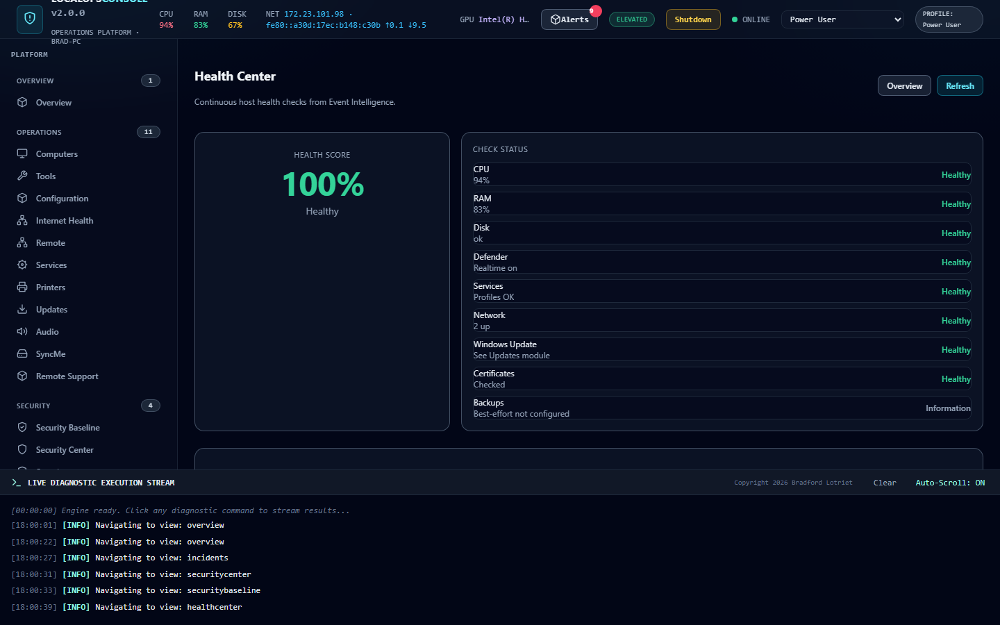
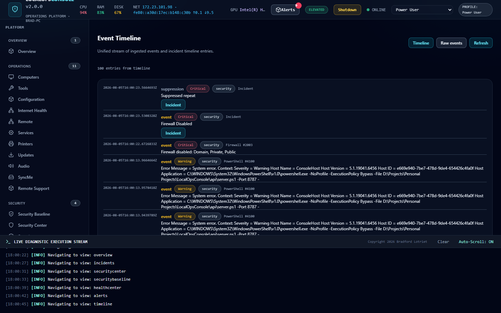
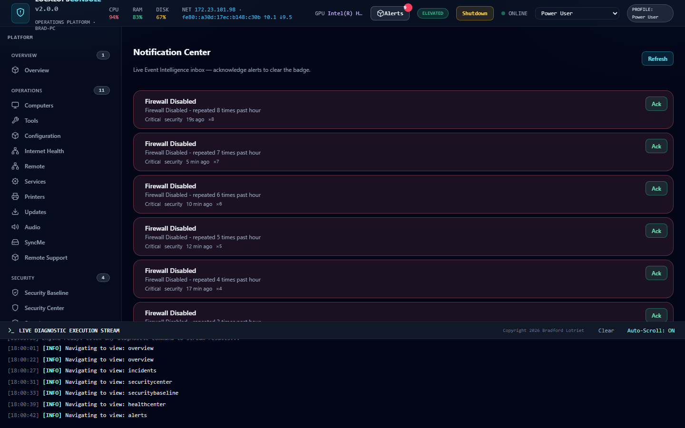
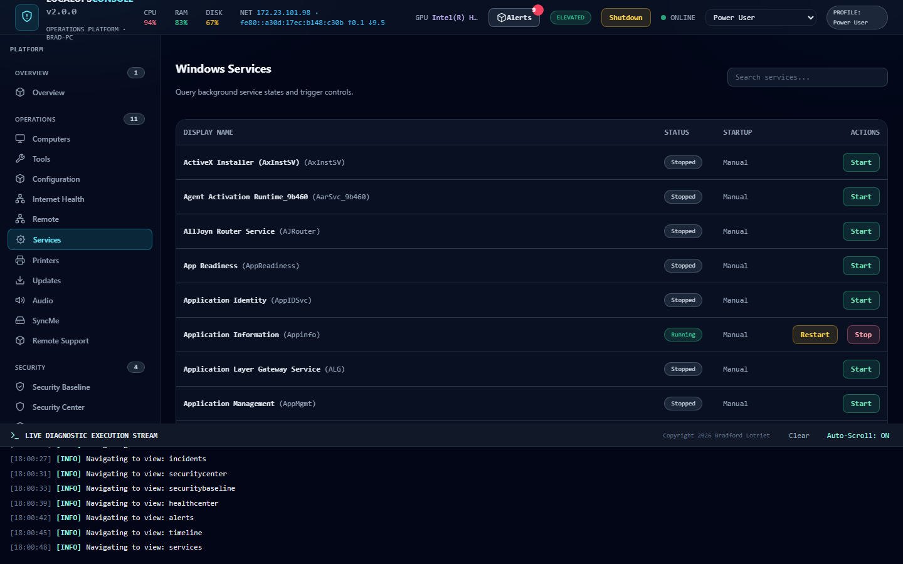
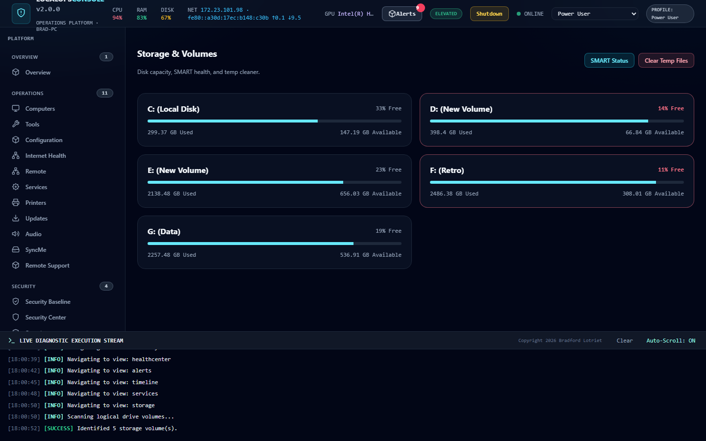
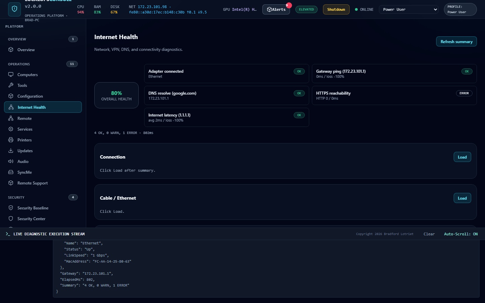
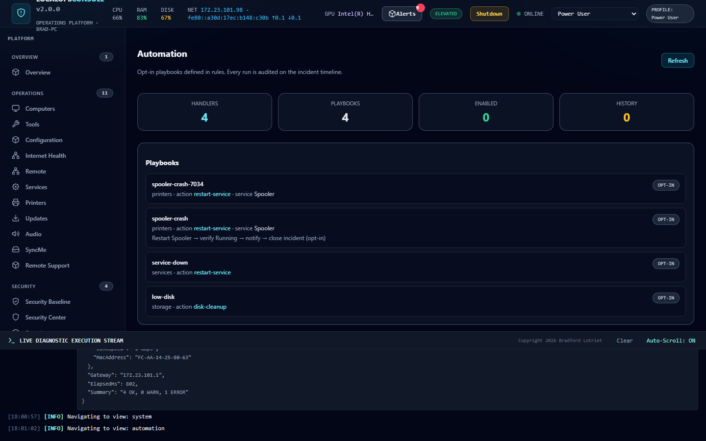

Screenshots
Real captures from the running ops console — grouped the same way the sidebar is.
Overview
Open the console and answer “is this computer healthy?” before digging into modules.

Health score, security posture, and active incidents at a glance

Host health score with deep links into ops modules
Security
Posture score, control status, and a full baseline audit — without leaving the box.

Score, Defender / Firewall / BitLocker status, alert pressure

Control-by-control audit with recommendations
Incidents
Correlated work items — not raw Event Viewer noise.

Open / critical / warning counts with timeline-ready detail

Event Intelligence trail feeding incidents
Health
Periodic host checks rolled into a score operators can trust.
Score plus shortcuts into Services, Storage, and Internet Health
Monitoring
Notifications and timelines that close the loop from signal to action.

Notification Center with severity and quiet-hour awareness
Normalized events on a shared timeline
Operations
Day-to-day modules — services, storage, connectivity — with inventory and remediation surfaces.

Critical profiles, dependency maps, failure history

Capacity, SMART history, cleanup paths

DNS, latency, connectivity, and repair workflows
Performance
Live telemetry while you work the ticket.

CPU, RAM, disk I/O, network bandwidth, GPU, uptime
Automation
Opt-in playbooks — restart, verify, notify, close — always audited.

Config-driven playbooks with explicit enable